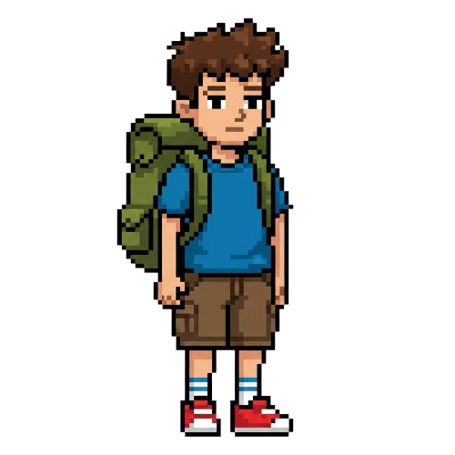
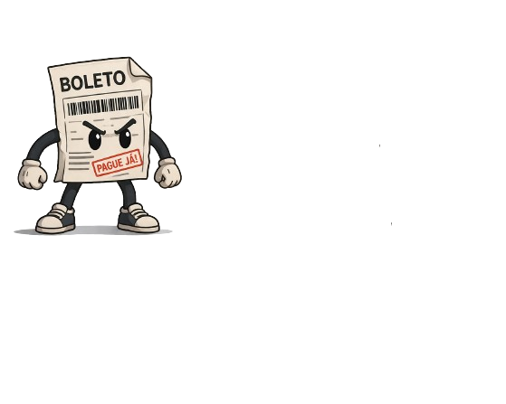
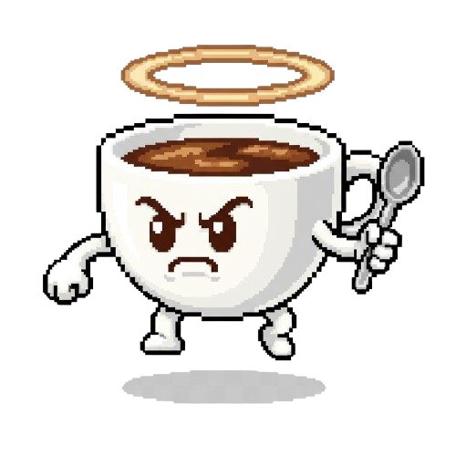
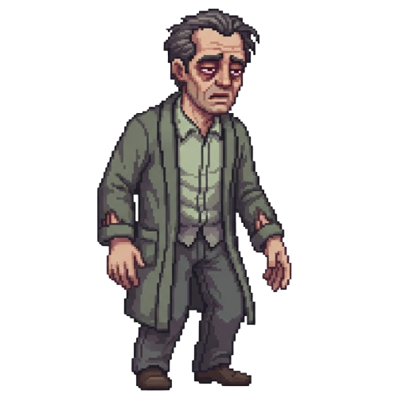
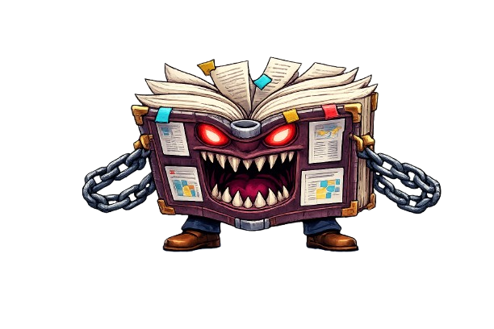

Um jogo 2D onde o jogador enfrenta os desafios da vida acadêmica. Entre boletos, cansaço, café e o terrível TCC, o estudante precisa sobreviver aos obstáculos até chegar à universidade e conquistar sua vitória.
Em O Estudante Universitário, o jogador controla um jovem estudante que precisa atravessar diversos obstáculos para alcançar a universidade.
Durante a jornada, será necessário derrotar inimigos que representam dificuldades reais da vida acadêmica, como o cansaço extremo, os boletos para pagar e a dependência de café.
O maior desafio é enfrentar o poderoso chefão: o TCC Monstruoso, que ataca lançando folhas e trabalhos acadêmicos.
Após derrotar os inimigos e coletar a Nota A+ da prova final, o jogador conquista sua vitória acadêmica.

Um universitário determinado que enfrenta os desafios da vida acadêmica para alcançar seu sonho.

Representa as dificuldades financeiras da vida universitária. Um dos obstáculos mais perigosos do jogo.

O café dá energia, mas também simboliza as noites sem dormir estudando para provas e trabalhos.

Representa o desgaste físico e mental causado pela rotina intensa da faculdade.

O inimigo final do jogo. Um gigantesco livro amaldiçoado que lança folhas e trabalhos acadêmicos para impedir o estudante de se formar.
• Explore fases inspiradas na rotina universitária.
• Derrote inimigos e desvie dos obstáculos.
• Colete itens importantes durante a jornada.
• Enfrente o TCC no combate final.
• Pegue a Nota A+ para vencer o jogo.
Após superar todos os desafios da faculdade, derrotar os inimigos e coletar a prova com nota máxima, o estudante finalmente alcança sua formatura e conquista seu sucesso acadêmico.